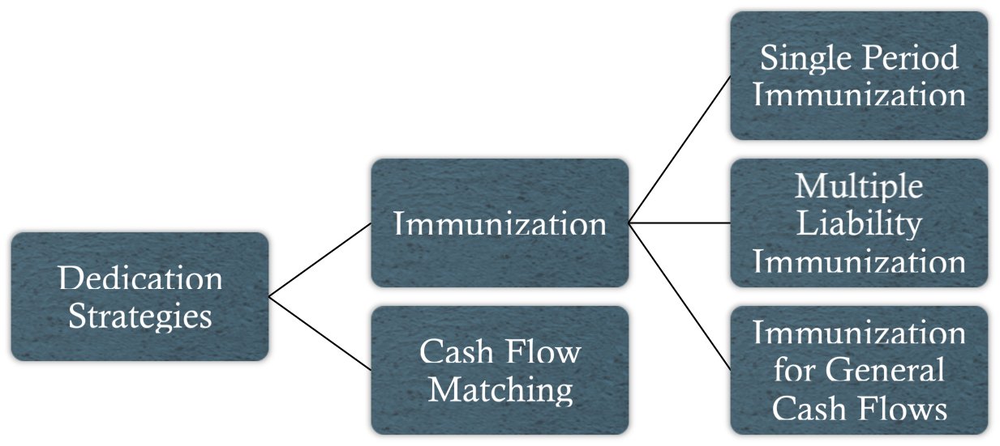
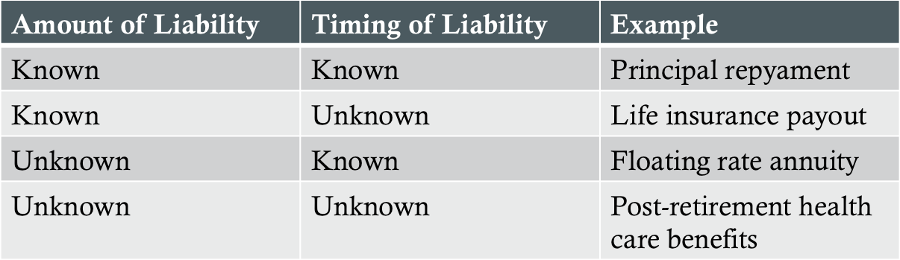

Four activities composing the investment management process:
Setting investment objectives (with related contraints)
Developing and implementing a portfolio strategy
Monitoring the portfolio
Adjusting the portfolio
**See reading 23, page 7 for a detailed diagram**
Managing Funds Against a Bond Market Index
Types of Strategies
Pure bond indexing (full replication) approach
Enhanced indexing by matching primary risk factors
Enhanced indexing by small risk factor mismatches
Active management by larger risk factor mismatches
Full active management
General Considerations
Advantages:
Lower fees than actively managed accounts
Difficult to outperforma a broad-based market index consistently after fees
Provides excellent diversification
Primary risk considerations:
Market value risk
Income risk
Credit risk
Liability framework risk
Risk Overview
Yield curve risk
Parallel shifts, twists, and other curvature changes
Spread risk - changes in the spread between Treasuries and non-Treasuries
Risk profile - detailed tabulation of an index's risk exposures
Cell-matching vs. mutifactor model technique
Tracking Risk
Definition: A measure of the variability with which a portfolio's return tracks the return of a benchmark index
Tracking risk = Standard deviation of active returns
Active return = Portfolio's return - Benchmark index's return
Primary risk factors to match:
Portfolio duration
Key rate duration and PV distribution of cash flows
Sector and quality percent
Sector duration contribution
Quality spread duration contribution
Sector/coupon/maturity cell weights
Issuer exposure
Enhanced Indexing Strategies
Lower cost enhancements
Issue selection enhancements
Yield curve positioning
Sector and quality positioning
Call exposure positioning
Active Strategies
Steps:
Identify which index mismatches are to be exploited
Extrapolate the market's expectations (or inputs) from the market data
Independently forecast the necessary inputs and compare these with the market's expectations
Estimate the relative values of securities in order to identify areas of under-/overvaluation
Managing Funds Against Liabilities
Dedication Strategies
Definition: Specialized fixed-income strategies that are designed to accomodate specific funding needs of the investor

Types of Liabilities

Single Period Immunization
Definition: The creation of a fixed-income portfolio that produces an assured return for a specific time horizon, irrespective of any parallel shifts in the yield curve
Requires setting the duration of the portfolio equal to the specified portfolio time horizon to assure the offsetting of positive and negative incremental returns
Key characteristics:
Specified time horizon
Assured rate of return during the holding period to a fixed horizon date
Insulation from the effects of interest rate changes on the portfolio value at the horizon date
Dollar Duration
Definition: A measure of the change in portfolio value for a 100 bps change in market yields
Dollar duration = Duration × Portfolio value × 0.01
Rebalancing dollar duration steps:
Move forward in time and include a yield curve shift then calculate the dollar duration of the portfolio using the new market values and durations
Calculate the rebalancing ratio (original dollar duration divided by new dollar duration) and subtract one to determine the percentage amount each position needs to be changed
Multiply new market value of the portfolio by desired percentage change to determine the amount of cash required for rebalancing
Spread Duration
Definition: A measure of how the market value of a risky bond will change with respect to a parallel 100 bps change in its spread above the comparable benchmark
Spread types:
Nominal spread - spread of a bond above the yield of a similar maturity Treasury
Static spread (zero-volatility spread) - constant spread above the Treasury spot curve that equates the calculated price of a security to its market price
Option-adjusted spread (OAS) - current spread over the benchmark yield less the spread component attributable to any embedded optionality
Multiple Liability Immunization
Necessary conditions for successful immunization:
PV of assets equals PV of liabilities
Composite duration of the portfolio equals composite duration of the liabilities
Distribution of durations of individual portfolio assets must have a wider range that that of the liabilities
Cash Flow Matching Strategies
Definition: The process of selecting securities to match the timing and amount of liabilities
Conceptually simpler, yet technically inferior to immunization
Requires a relatively conservative rate of return assumption for short-term cash and cash balances may be large
Funds must be available when each liability is due